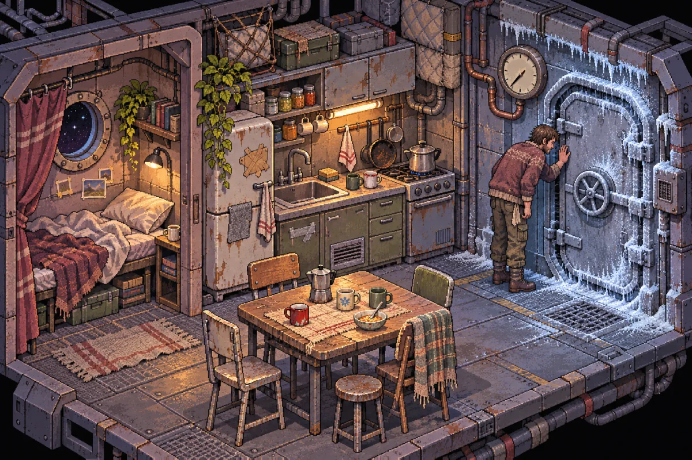

궤도 주거단지에서 하룻밤 쓸 공기를 구하는 생존 게임 기획
204호 식탁에는 어제 내려놓은 장보기 가방이 있다. 오늘 필요한 건 가게 계산대 밑에 있는 도시락 하나다. 현관의 압력계 두 바늘이 한참 벌어져 있다. 어제처럼 가방을 끌고 정문으로 나가면 돌아왔을 때 이 집에서 잘 수 있을까?

좀보이드에서 방문 하나가 중요한 이유
프로젝트 좀보이드에서 생존자는 켄터키를 본뜬 지역의 집을 뒤져 음식을 구하고 은신처를 꾸린다. 배고픔과 갈증이 외출할 이유를 만들고, 낮과 밤의 변화와 전력 사정이 외출 조건을 바꾼다. 개발사는 시선이 닿는 범위, 실시간 조명, 소리를 각각 생존에 관여하는 요소로 설명한다. 위에서 내려다보는 화면에 건물 전체가 그려져 있어도 인물이 모퉁이 너머의 사정을 아는 데는 한계가 있다. The Indie Stone의 게임 소개와 주요 기능
개발 기록에는 이 감각을 만드는 세부 결정이 남아 있다. 빌드 38에서는 창문에 다가가 안쪽을 살펴보게 했고, 빌드 41에서는 인물 주변 벽을 잘라 보여 주는 방식을 도입했다. 41의 물품 배치도 집과 가게에서 물건이 실제로 있을 법한 수납함을 찾도록 고쳤다. 같은 기록에서 부상은 움직임과 전투 동작을 눈에 띄게 방해한다고 설명한다. 물건이 있을 곳을 짐작할 수 있고, 몸 상태가 달라지면 거기까지 다녀오는 비용도 달라진다. The Indie Stone의 빌드 38·41 개발 기록
가령 해 질 무렵 상점 안에서 좀비를 발견했다고 하자. 물러나면 저녁거리가 없고, 소란을 피우면 가게 밖의 무리까지 움직일 수 있다. 다친 다리로 돌아와 밤을 설친다면 다음 외출에는 어제보다 짧은 길을 골라야 한다. 이는 게임 속 기능을 엮은 플레이 예시다. 개발 기록에는 통증이 수면을 방해하고, 야간에 은신처를 제대로 지키지 않으면 잠든 사이 침입이 일어날 수 있다는 규칙이 실려 있다. 몸을 추스를 장소까지 마련해야 수색 한 번이 끝난다. 빌드 35의 수면과 야간 사건
여기서 가져올 설계는 관찰하고 짐작한 뒤 몸을 움직여 확인하는 순서다. 선반이 있을 만한 벽, 들어갈 수 있는 문, 다친 채 돌아올 수 있는 거리를 플레이어가 판단하게 한다. 궤도 주거단지에서는 문 너머에 다른 압력의 방이 있다. 문을 열면 건너편 선반의 식량에 손이 닿는다. 그사이 침실의 압력계도 한 칸 내려간다. 돌아와서 잘 곳까지 생각해야 문을 열지 말지 정할 수 있다.
문을 열 때 두 방에서 생기는 일
파편이 외벽을 지나간 뒤 회전식 주거단지 주민들은 중앙 대피동으로 옮겨 갔다. 회전이 유지되어 가구와 사람은 바닥에 서 있다. 플레이어는 먼저 귀가한 주민 한 명이다. 단지 전체를 한꺼번에 채울 예비 공기가 없어 집마다 밀폐문을 닫아 두었다. 닫힌 구멍가게에선 냉장 반찬이 상해 가고 옆 공용주방엔 아직 불이 들어온다. 중앙 대피동 방송은 어느 동에서 오늘 밤 사람을 재울 수 있는지 묻는다. 한 사람을 직접 움직이는 실시간 게임이라 선반을 뒤지거나 공구를 쓰는 동안에도 옆방의 바늘과 손목시계는 계속 간다.
플레이어가 익힐 규칙은 세 가지다. 문 옆의 두 바늘은 각 방의 압력을 가리킨다. 압력 차가 크면 문은 잠겨 있고 손잡이 밑의 작은 균압구만 열 수 있다. 균압구를 열면 높은 쪽 바늘이 내려가고 낮은 쪽 바늘이 오른다. 도중에 손을 떼면 그 상태에서 양쪽이 다시 나뉜다. 문을 활짝 연 동안은 두 방이 공기를 나눠 쓰므로 멀쩡한 침실도 옆방의 외벽 틈으로 계속 공기를 잃을 수 있다.
마지막으로 잠자리에는 압력과 공기 재생이 모두 필요하다. 재생기가 멈춘 밀폐실에서는 자는 동안 공기질이 나빠진다. 재생기는 전기와 여과통을 쓰고, 새는 방을 채우려면 따로 비축 공기를 써야 한다. 침대 곁 표시기는 현재 인원과 문 상태를 기준으로 언제 경보가 울릴지 보여 준다. 손님을 들이거나 문을 열어 두면 예상 시간이 바로 바뀐다. 외출용 호흡복은 짧은 왕복만 버텨서 그 옷을 입고 밤새 잘 수는 없다.
도시락 하나를 가지러 나간 하루
- 아침, 먼저 현관 앞에서 멈춘다. 복도 쪽 바늘은 조금 전보다 더 내려갔다. 현관문 안쪽은 밤새 같은 눈금이었다. 현관으로 가면 집 안의 공기가 복도로 흘러갈 것이다. 침실 문부터 닫아 공기를 남겨 두고 거실만 현관에 연결한다. 귀가 후 침실에서 쉴 수 있지만, 거실에서 아침을 먹으려면 나중에 그 공간을 다시 채워야 한다.
- 점심, 가게까지 다섯 문을 건넌다. 폐점한 반찬가게 손님용 냉장고는 꺼져 있다. 계산대 뒤 보온함에는 데워 먹는 상온 보관용 도시락이 있고, 뒤편 싱크대 아래에는 규격이 맞는 여과통이 있다. 도시락과 여과통을 가방에 넣고 음료 상자까지 들면 좁은 통로에서 난간을 짚을 손이 없다. 음료 상자는 가게 바닥에 내려놓고 분필로 표시한다. 이 상자는 누군가 옮기기 전까지 그대로 있어 다음 장보기 목적지가 된다.
- 오후, 당장 고칠 곳을 바꾼다. 공용주방 재생기에 여과통을 끼우면 오늘 밥을 나눠 먹을 수 있다. 집의 재생기에 끼우면 침실에서 두 사람이 잘 수 있다. 손목을 삔 이 인물은 공구 잠금쇠를 한 손으로 여는 데 오래 걸린다. 주방에서 일할 경우 호흡복 잔량으로 집까지 갈 수 있는지 작업 예상 시간과 어제 적어 둔 귀가 시간을 맞춰 본다.
- 저녁, 가게에서 한 결정이 식탁에 돌아온다. 오늘은 집을 골랐다. 한 사람을 더 부르고, 데우지 않은 도시락을 침실 바닥에서 나눠 먹는다. 내일 두 사람은 음료 상자를 회수할 수 있다. 주방을 골랐다면 따뜻한 저녁을 먹고 대피동의 접이침대까지 한 번 더 걸어야 했다. 단지 시계가 야간으로 넘어가 복도 조명이 발밑 유도등만 남기면 선반과 표지판을 읽을 손전등도 필요하다.
같은 단지에 다시 살면 고르는 길
가게, 업무용 뒷문, 주민용 정문, 공용주방, 세탁실의 자리는 고정한다. 새 세계를 만들 때에는 파편이 스친 외벽 구간, 비상 전기가 연결된 동, 대피 직전에 남은 물품과 귀가 신청자 구성이 달라진다. 각각 외벽 수리표, 전력반 점등, 배식 장부, 방송 명단으로 확인할 수 있다. 외워 둔 지름길과 상점 구조는 두 번째 판을 빠르게 하지만, 그날 그 길로 운반할 물건은 직접 정해야 한다.
같은 반찬가게에서 어느 문을 여나
첫 번째 세계에서 손님용 복도 바늘은 반나절 내내 같다. 손수레를 끌고 정문으로 가면 물통 여러 개를 한꺼번에 나를 수 있다. 두 번째 세계에서는 바로 그 복도의 압력이 계속 내려간다. 이때 정문을 열면 아직 가득 찬 가게 공기가 새어 나가고 다음 방문부터 가게 안에서도 호흡복을 써야 한다. 낮은 업무용 통로는 손수레가 지나가지 못하지만 문 두 개가 차례로 닫히는 작은 전실이 있다. 가게 공기를 지키고 여과통 하나만 품에 안아 돌아온다. 두 판 모두 뒷문의 위치를 아는 보람이 있다. 두 번째 판에서야 물통을 두고 올 가치가 생긴다.
같은 침실 옆 세탁실을 열어 둘까
첫 번째 세계에서 세탁실 재생기는 밤에도 전기를 받는다. 두 방의 압력이 같아진 뒤 연결문을 열어 두면 세탁실 장치로 침실 공기도 정화할 수 있다. 덕분에 이웃을 더 묵게 한다. 두 번째 세계에서는 야간 전력이 세탁동에서 끊기고 세탁실 외벽에는 작은 누출도 있다. 전력표와 바늘을 본 플레이어는 저녁 전에 연결문을 닫고, 여과통 하나를 침실로 옮겨 혼자 잔다. 이웃에게는 불이 들어온 공용주방 옆 휴게실을 알려 준다. 통로 하나와 여과통 하나의 쓰임이 두 회차에서 달라진다.
다음 사람이 돌아올 집
처음에는 스스로 먹고 자고 돌아오는 일이 목표다. 이후 귀가 희망자 명단에서 누가 돌아올지 정할 수 있다. 반찬가게 주인은 하루 한 차례 배식을 맡고 자기 몫의 침대와 물을 쓴다. 세탁소 주인은 호흡복 안감을 말려 다음 외출 준비를 앞당기지만 야간 전력이 필요하다. 부탁을 미루면 그 사람은 대피동에 남는다. 어떤 집을 먼저 열었는지에 따라 혼자 가볍게 다니던 길이 솥과 침구를 나르는 길로 바뀐다. 출근한 주인이 다시 손님을 받는 날, 예전에는 뒤져야 했던 보온함에서 내 도시락을 주문할 수 있다.
원한다면 한 동의 주민들이 사흘간 식사와 잠을 직접 해결하는 시점에 복구 기록을 남기고 마칠 수 있다. 그 뒤에도 저장한 단지를 계속 운영할 수 있다. 사고로 인물이 죽으면 그 사람이 익힌 손재주와 몸 상태는 거기서 끝난다. 같은 단지를 이어 하면 다음 귀가자가 대피동에서 출발한다. 열어 둔 가게 문, 놓고 간 상자, 이미 입주한 사람은 그대로다. 새 인물은 시신이 있는 방까지 가야 가방을 회수할 수 있다. 새 세계를 시작하면 입주자와 물건과 수리 내역을 모두 초기화하고 사고 조건을 다시 뽑는다. 다음 인물이 처음부터 쓸 수 있는 것은 플레이어가 기억한 단지 구조다.
화면에 보이는 공기, 첫 실험
등각 화면 한 칸은 사람 한 명이 서거나 가방 하나를 놓을 자리다. 가까이 간 방의 앞벽을 잘라 보여 주고, 닫힌 방의 가구는 창이나 열린 문으로 직접 본 만큼만 드러낸다. 낡은 장판, 냉장고 자석, 복도에 늘어선 유모차를 낮은 해상도의 타일과 작은 인물 동작으로 그린다. 큰 압력 차는 균압구의 긴 바람 소리와 크게 움직이는 천 조각으로, 느린 누출은 시간이 지나도 한쪽으로 기운 얇은 표찰로 드러낸다. 소리 자막에는 방향과 지속 여부를 쓰고 바늘에는 무늬와 ‘내 방·건너편’ 글자를 붙인다. 움직임을 줄이는 설정에서는 천과 표찰 대신 고정 화살표를 표시한다.
첫 플레이테스트에는 204호, 반찬가게, 세탁실과 두 통로만 만든다. 침실을 살린 채 도시락 하나를 가져오는 과제를 같은 참가자에게 두 번 주고, 두 번째에는 손님용 복도에만 누출을 둔다. 문을 열기 직전 어느 쪽 바늘이 내려갈지 말해 보게 하고, 돌아온 뒤에는 잠을 잘 수 있었거나 없었던 이유를 묻는다. 두 번째에 정문 앞에서 누출을 알아차리고 뒷문으로 갈 수 있었는지 관찰한다. 무음 상태에서도 같은 판단이 가능한지 다시 본다. 양쪽 방의 바늘을 반대로 읽는 사람이 여럿이라면 바늘 표시를 각 문설주에 붙여 두 방의 위치와 대응시킨 뒤 같은 장면을 재시험한다.
콘셉트 아트 생성 프롬프트
stylized-concept. Wide landscape 3:2 original in-game scene, single fixed orthographic 3/4 isometric angle. A lived-in orbital apartment block cross-section, compact bedroom with a rumpled bed opening into the common kitchen with mismatched cups and table, beyond it a sealed metal pressure door crusted with frost and a round mechanical pressure gauge without numbers. One visibly ordinary resident in a faded sweater is inspecting the door. Cold edge light on frost, warm practical kitchen light, worn steel, lived-in repairs. Show a little starry darkness through one porthole. A clean, readable survival game environment with deliberate, chunky, hard-edged pixel clusters, detailed grungy pixel tiles, grounded human proportions; frame filled by the playable space, no detached diorama base. Quiet, no battle. No HUD, lettering, numerals, labels, game title, logo or watermark.